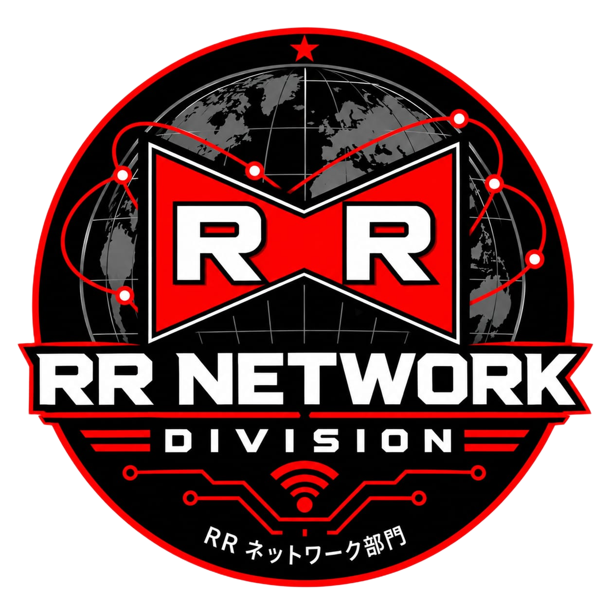

Scopri le ricerche realizzate da RR-Network Division.
È il punto di partenza obbligato. Il TCP stabilisce le regole base per la comunicazione e la trasmissione affidabile dei dati tramite la sua architettura orientata alla connessione. Spiegare prima il TCP fornisce all'utente le basi per comprendere concetti fondamentali come il three-way handshake e il controllo della congestione.
Il documento stesso specifica che lo SCTP è un protocollo di livello 4 progettato per unire i vantaggi del TCP e dell'UDP. Posizionandolo subito dopo il TCP, l'utente può fare un confronto diretto e capire perché per reti mobili 4G/5G o sistemi "Mission-Critical" servano funzionalità più avanzate e tolleranti ai guasti come il Multi-Homing e il Multi-Streaming.
Salendo di livello, passiamo ai servizi applicativi. Quando si configura una rete (anche nelle simulazioni di topologie), l'assegnazione degli indirizzi IP è il primo passo operativo. Spiegare il DHCP per terzo mostra come i dispositivi entrano concretamente nella rete automatizzando la ricezione dei parametri vitali (come IP, Subnet Mask e Gateway) necessari per poter comunicare.
L'NTP chiude il percorso. È un servizio specifico che presuppone una rete già configurata (con IP precedentemente assegnati dal DHCP). Mettendolo per ultimo, puoi focalizzarti sul suo ruolo chiave come "pilastro invisibile" per la sicurezza moderna (essenziale per la validazione dei certificati e la crittografia), fungendo da ottimo ponte per parlare in modo approfondito delle vulnerabilità di rete e degli attacchi DDoS descritti nei tuoi documenti.
